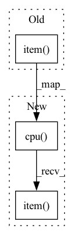

Pattern ID :16592
Before Change
for i, param in enumerate(["sigma", "flux"]):
self[param].set_value(res.x[i], override_locked = self[param].value is None)
if self["sigma"].uncertainty is None:
self["sigma"].set_uncertainty(0.02 * self["sigma"].value.detach().item() , override_locked = True)
if self["flux"].uncertainty is None:
self["flux"].set_uncertainty(0.02 * np.abs(self["flux"].value.detach().item()), override_locked = True)
After Change
for i, param in enumerate(["sigma", "flux"]):
self[param].set_value(res.x[i], override_locked = self[param].value is None)
if self["sigma"].uncertainty is None:
self["sigma"].set_uncertainty(0.02 * self["sigma"].value.detach().cpu().item() , override_locked = True)
if self["flux"].uncertainty is None:
self["flux"].set_uncertainty(0.02 * np.abs(self["flux"].value.detach().cpu().item()), override_locked = True)
In pattern: SUPERPATTERN
Frequency: 13
Non-data size: 3
Instances Fragment ID: 55790611
Project Name: connorstoneastro/autoprof
Commit Name: e4d4934ad503e458902b58bb568d9fbbe704de6b
Time: 2022-11-18
Author: connorstone628@gmail.com
File Name: autoprof/models/_shared_methods.py
M Class Name: AnonimousClass
N Class Name: AnonimousClass
M Method Name: gaussian_initialize(1)
N Method Name: gaussian_initialize(1)
M Parent Class:
N Parent Class:
M File Name: autoprof/models/_shared_methods.py
N File Name: autoprof/models/_shared_methods.py
M Start Line: 121
M End Line: 145
N Start Line: 121
N End Line: 145
Before Change
if self["PA"].value is None:
iso_info = isophotes(
target_area.data.detach().numpy() - edge_average,
(icenter[1].detach().item() , icenter[0].detach().item()),
threshold = 3*edge_scatter,
pa = 0., q = 1., n_isophotes = 15
)After Change
if self["PA"].value is None:
iso_info = isophotes(
target_area.data.detach().cpu().numpy() - edge_average,
(icenter[1].detach().cpu().item() , icenter[0].detach().cpu().item()),
threshold = 3*edge_scatter,
pa = 0., q = 1., n_isophotes = 15
) Fragment ID: 55790579
Project Name: connorstoneastro/autoprof
Commit Name: e4d4934ad503e458902b58bb568d9fbbe704de6b
Time: 2022-11-18
Author: connorstone628@gmail.com
File Name: autoprof/models/edgeon_model.py
M Class Name: EdgeOn_Model
N Class Name: EdgeOn_Model
M Method Name: initialize(1)
N Method Name: initialize(1)
M Parent Class: BaseModel
N Parent Class: BaseModel
M File Name: autoprof/models/edgeon_model.py
N File Name: autoprof/models/edgeon_model.py
M Start Line: 37
M End Line: 38
N Start Line: 37
N End Line: 38
Before Change
with torch.no_grad():
profR = self.profR.detach().numpy()
target_area = self.target[self.fit_window]
X, Y = target_area.get_coordinate_meshgrid_np(self["center"].value[0].detach().item() , self["center"].value[1].detach().item())
X, Y = self.transform_coordinates(X, Y)
R = self.radius_metric(X, Y).detach().numpy()
rad_bins = [profR[0]] + list((profR[:-1] + profR[1:])/2) + [profR[-1]*100]After Change
with torch.no_grad():
profR = self.profR.detach().cpu().numpy()
target_area = self.target[self.fit_window]
X, Y = target_area.get_coordinate_meshgrid_np(self["center"].value[0].detach().cpu().item() , self["center"].value[1].detach().cpu().item())
X, Y = self.transform_coordinates(X, Y)
R = self.radius_metric(X, Y).detach().cpu().numpy()
rad_bins = [profR[0]] + list((profR[:-1] + profR[1:])/2) + [profR[-1]*100] Fragment ID: 55790610
Project Name: connorstoneastro/autoprof
Commit Name: e4d4934ad503e458902b58bb568d9fbbe704de6b
Time: 2022-11-18
Author: connorstone628@gmail.com
File Name: autoprof/models/_shared_methods.py
M Class Name: AnonimousClass
N Class Name: AnonimousClass
M Method Name: nonparametric_initialize(1)
N Method Name: nonparametric_initialize(1)
M Parent Class:
N Parent Class:
M File Name: autoprof/models/_shared_methods.py
N File Name: autoprof/models/_shared_methods.py
M Start Line: 172
M End Line: 178
N Start Line: 172
N End Line: 178
Before Change
)
else:
metric_output[metric] = (
metric_function(predicted, ground_truth, params).cpu().data.item()
)
else:
print(
"WARNING: Could not find the requested metric "" + metric,
file=sys.stderr,After Change
)
else:
metric_output[metric] = (
metric_function(predicted, ground_truth, params).detach().cpu().data.item()
)
else:
print(
"WARNING: Could not find the requested metric "" + metric,
file=sys.stderr, Fragment ID: 55790608
Project Name: cbica/gandlf
Commit Name: b0f690cc3e11dd18f1adbc29ffa38120c9732217
Time: 2021-10-02
Author: sarthak.pati@hotmail.com
File Name: GANDLF/compute/loss_and_metric.py
M Class Name: AnonimousClass
N Class Name: AnonimousClass
M Method Name: get_loss_and_metrics(4)
N Method Name: get_loss_and_metrics(4)
M Parent Class:
N Parent Class:
M File Name: GANDLF/compute/loss_and_metric.py
N File Name: GANDLF/compute/loss_and_metric.py
M Start Line: 60
M End Line: 67
N Start Line: 60
N End Line: 68
Before Change
for r in range(self.rays):
flux = []
for iso in iso_info:
modangles = (iso["angles"] - (self["PA"].value.detach().item() + r*np.pi/self.rays)) % np.pi
flux.append(np.median(iso["isovals"][np.logical_or(modangles < (0.5*np.pi/self.rays), modangles >= (np.pi*(1 - 0.5/self.rays)))]) / self.target.pixelscale**2)
flux = np.array(flux)
if np.sum(flux < 0) >= 1:After Change
for r in range(self.rays):
flux = []
for iso in iso_info:
modangles = (iso["angles"] - (self["PA"].value.detach().cpu().item() + r*np.pi/self.rays)) % np.pi
flux.append(np.median(iso["isovals"][np.logical_or(modangles < (0.5*np.pi/self.rays), modangles >= (np.pi*(1 - 0.5/self.rays)))]) / self.target.pixelscale**2)
flux = np.array(flux)
if np.sum(flux < 0) >= 1: Fragment ID: 55790614
Project Name: connorstoneastro/autoprof
Commit Name: e4d4934ad503e458902b58bb568d9fbbe704de6b
Time: 2022-11-18
Author: connorstone628@gmail.com
File Name: autoprof/models/exponential_model.py
M Class Name: Exponential_Ray
N Class Name: Exponential_Ray
M Method Name: initialize(1)
N Method Name: initialize(1)
M Parent Class: Ray_Galaxy
N Parent Class: Ray_Galaxy
M File Name: autoprof/models/exponential_model.py
N File Name: autoprof/models/exponential_model.py
M Start Line: 152
M End Line: 180
N Start Line: 152
N End Line: 180
Before Change
return
// Convert center coordinates to target area array indices
init_icenter = coord_to_index(self["center"].value[0].detach().item(), self["center"].value[1].detach().item() , target_area)
// Compute center of mass in window
COM = center_of_mass((init_icenter[0], init_icenter[1]), target_area.data.detach().numpy())
if np.any(np.array(COM) < 0) or np.any(np.array(COM) >= np.array(target_area.data.shape)):After Change
return
// Convert center coordinates to target area array indices
init_icenter = coord_to_index(self["center"].value[0].detach().cpu().item(), self["center"].value[1].detach().cpu().item() , target_area)
// Compute center of mass in window
COM = center_of_mass((init_icenter[0], init_icenter[1]), target_area.data.detach().cpu().numpy())
if np.any(np.array(COM) < 0) or np.any(np.array(COM) >= np.array(target_area.data.shape)): Fragment ID: 55790612
Project Name: connorstoneastro/autoprof
Commit Name: e4d4934ad503e458902b58bb568d9fbbe704de6b
Time: 2022-11-18
Author: connorstone628@gmail.com
File Name: autoprof/models/model_object.py
M Class Name: BaseModel
N Class Name: BaseModel
M Method Name: initialize(1)
N Method Name: initialize(1)
M Parent Class: AutoProf_Model
N Parent Class: AutoProf_Model
M File Name: autoprof/models/model_object.py
N File Name: autoprof/models/model_object.py
M Start Line: 89
M End Line: 91
N Start Line: 89
N End Line: 91
Before Change
self._compression.data.copy_(torch.tensor(compression))
def get_compression(self) -> Union[float, List[float]]:
return self._compression.item() if not self._channel_wise else [float(s) for s in self._compression]
def _param_clamp(self):
self._threshold.clamp(self._threshold_dynamic_val, 1e5) // NB: not done inplaceAfter Change
self._compression.data.copy_(torch.tensor(compression))
def get_compression(self) -> Union[float, List[float]]:
return self._compression.data.cpu().item() if not self._channel_wise else self._compression.data.cpu().tolist()
def _param_clamp(self):
self._threshold.clamp(self._threshold_dynamic_val, 1e5) // NB: not done inplace Fragment ID: 55790616
Project Name: neuralmagic/sparseml
Commit Name: f63ee91fd6ea810eca6a40b9e897c1277409c8ca
Time: 2019-08-28
Author: mark@neuralmagic.com
File Name: neuralmagicML/sparsity/activation/fatrelu.py
M Class Name: _DiffFATReLU
N Class Name: _DiffFATReLU
M Method Name: get_compression(1)
N Method Name: get_compression(1)
M Parent Class: FATReLU
N Parent Class: FATReLU
M File Name: neuralmagicML/sparsity/activation/fatrelu.py
N File Name: neuralmagicML/sparsity/activation/fatrelu.py
M Start Line: 233
M End Line: 233
N Start Line: 242
N End Line: 242
Before Change
self["Re"].set_value(res.x[1], override_locked = self["Re"].value is None)
self["Ie"].set_value(np.log10(res.x[2]), override_locked = (self["Ie"].value is None))
if self["Re"].uncertainty is None:
self["Re"].set_uncertainty(0.02 * self["Re"].value.detach().item() , override_locked = True)
if self["Ie"].uncertainty is None:
self["Ie"].set_uncertainty(0.02, override_locked = True)
After Change
self["Re"].set_value(res.x[1], override_locked = self["Re"].value is None)
self["Ie"].set_value(np.log10(res.x[2]), override_locked = (self["Ie"].value is None))
if self["Re"].uncertainty is None:
self["Re"].set_uncertainty(0.02 * self["Re"].value.detach().cpu().item() , override_locked = True)
if self["Ie"].uncertainty is None:
self["Ie"].set_uncertainty(0.02, override_locked = True)
Fragment ID: 55790594
Project Name: connorstoneastro/autoprof
Commit Name: e4d4934ad503e458902b58bb568d9fbbe704de6b
Time: 2022-11-18
Author: connorstone628@gmail.com
File Name: autoprof/models/_shared_methods.py
M Class Name: AnonimousClass
N Class Name: AnonimousClass
M Method Name: sersic_initialize(1)
N Method Name: sersic_initialize(1)
M Parent Class:
N Parent Class:
M File Name: autoprof/models/_shared_methods.py
N File Name: autoprof/models/_shared_methods.py
M Start Line: 74
M End Line: 99
N Start Line: 74
N End Line: 99
Before Change
return
if self["PA(R)"].value is None:
self["PA(R)"].set_value(np.ones(len(self.profR))*self["PA"].value.detach().item() , override_locked = True)
if self["q(R)"].value is None:
self["q(R)"].set_value(np.ones(len(self.profR))*0.9, override_locked = True)After Change
return
if self["PA(R)"].value is None:
self["PA(R)"].set_value(np.ones(len(self.profR))*self["PA"].value.detach().cpu().item() , override_locked = True)
if self["q(R)"].value is None:
self["q(R)"].set_value(np.ones(len(self.profR))*0.9, override_locked = True) Fragment ID: 55790593
Project Name: connorstoneastro/autoprof
Commit Name: e4d4934ad503e458902b58bb568d9fbbe704de6b
Time: 2022-11-18
Author: connorstone628@gmail.com
File Name: autoprof/models/warp_model.py
M Class Name: Warp_Galaxy
N Class Name: Warp_Galaxy
M Method Name: initialize(1)
N Method Name: initialize(1)
M Parent Class: Galaxy_Model
N Parent Class: Galaxy_Model
M File Name: autoprof/models/warp_model.py
N File Name: autoprof/models/warp_model.py
M Start Line: 38
M End Line: 38
N Start Line: 38
N End Line: 38
Before Change
q_samples = np.linspace(0.1,0.9,15)
iso_info = isophotes(
target_area.data.detach().numpy() - edge_average,
(icenter[1].detach().item() , icenter[0].detach().item()),
threshold = 3*edge_scatter,
pa = self["PA"].value.detach().item(), q = q_samples,
) After Change
q_samples = np.linspace(0.1,0.9,15)
iso_info = isophotes(
target_area.data.detach().cpu().numpy() - edge_average,
(icenter[1].detach().cpu().item() , icenter[0].detach().cpu().item()),
threshold = 3*edge_scatter,
pa = self["PA"].value.detach().cpu().item(), q = q_samples,
) Fragment ID: 55790592
Project Name: connorstoneastro/autoprof
Commit Name: e4d4934ad503e458902b58bb568d9fbbe704de6b
Time: 2022-11-18
Author: connorstone628@gmail.com
File Name: autoprof/models/galaxy_model_object.py
M Class Name: Galaxy_Model
N Class Name: Galaxy_Model
M Method Name: initialize(1)
N Method Name: initialize(1)
M Parent Class: BaseModel
N Parent Class: BaseModel
M File Name: autoprof/models/galaxy_model_object.py
N File Name: autoprof/models/galaxy_model_object.py
M Start Line: 38
M End Line: 48
N Start Line: 38
N End Line: 48
Before Change
edge_scatter = iqr(edge, rng = (16,84))/2
// Convert center coordinates to target area array indices
icenter = coord_to_index(
self["center"].value[0].detach().item() ,
self["center"].value[1].detach().item(), target_area
)
iso_info = isophotes(After Change
edge_scatter = iqr(edge, rng = (16,84))/2
// Convert center coordinates to target area array indices
icenter = coord_to_index(
self["center"].value[0].detach().cpu().item() ,
self["center"].value[1].detach().cpu().item(), target_area
)
iso_info = isophotes( Fragment ID: 55790560
Project Name: connorstoneastro/autoprof
Commit Name: e4d4934ad503e458902b58bb568d9fbbe704de6b
Time: 2022-11-18
Author: connorstone628@gmail.com
File Name: autoprof/models/_shared_methods.py
M Class Name: AnonimousClass
N Class Name: AnonimousClass
M Method Name: exponential_initialize(1)
N Method Name: exponential_initialize(1)
M Parent Class:
N Parent Class:
M File Name: autoprof/models/_shared_methods.py
N File Name: autoprof/models/_shared_methods.py
M Start Line: 28
M End Line: 51
N Start Line: 28
N End Line: 51
Before Change
loss += criterion(predictions, y)
total_examples += len(y)
return (loss / total_examples).cpu().item()
def print_message(message: str) -> None:
After Change
loss += criterion.forward(predictions, y)
total_examples += len(y)
return torch.mean(loss / total_examples).cpu().item()
def print_message(message: str) -> None:
Fragment ID: 55790597
Project Name: ikergarcia1996/self-driving-car-in-video-games
Commit Name: 69ef10622fcf36a6a56d2b10ff1d232ad2350113
Time: 2021-02-12
Author: i.garciaf896@gmail.com
File Name: utils.py
M Class Name: AnonimousClass
N Class Name: AnonimousClass
M Method Name: evaluate(5)
N Method Name: evaluate(4)
M Parent Class:
N Parent Class:
M File Name: utils.py
N File Name: utils.py
M Start Line: 30
M End Line: 57
N Start Line: 23
N End Line: 63
Before Change
for r in range(self.rays):
flux = []
for iso in iso_info:
modangles = (iso["angles"] - (self["PA"].value.detach().item() + r*np.pi/self.rays)) % np.pi
flux.append(np.median(iso["isovals"][np.logical_or(modangles < (0.5*np.pi/self.rays), modangles >= (np.pi*(1 - 0.5/self.rays)))]) / self.target.pixelscale**2)
flux = np.array(flux)
if np.sum(flux < 0) >= 1:After Change
for r in range(self.rays):
flux = []
for iso in iso_info:
modangles = (iso["angles"] - (self["PA"].value.detach().cpu().item() + r*np.pi/self.rays)) % np.pi
flux.append(np.median(iso["isovals"][np.logical_or(modangles < (0.5*np.pi/self.rays), modangles >= (np.pi*(1 - 0.5/self.rays)))]) / self.target.pixelscale**2)
flux = np.array(flux)
if np.sum(flux < 0) >= 1: Fragment ID: 55790601
Project Name: connorstoneastro/autoprof
Commit Name: e4d4934ad503e458902b58bb568d9fbbe704de6b
Time: 2022-11-18
Author: connorstone628@gmail.com
File Name: autoprof/models/sersic_model.py
M Class Name: Sersic_Ray
N Class Name: Sersic_Ray
M Method Name: initialize(1)
N Method Name: initialize(1)
M Parent Class: Ray_Galaxy
N Parent Class: Ray_Galaxy
M File Name: autoprof/models/sersic_model.py
N File Name: autoprof/models/sersic_model.py
M Start Line: 163
M End Line: 193
N Start Line: 163
N End Line: 193